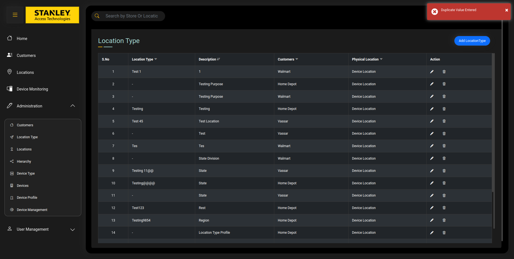

Started
Dec 23, 2022 05:08:20 pm
Ended
Dec 23, 2022 05:12:42 pm
Features Passed
0
Features Failed
3
Features
Scenarios
Steps
Timeline
-
Validate Add Location Type feature
17:08:20 pm / 00:03:53:714 Fail
Validate Add Location Type feature
12.23.2022 17:08:20 12.23.2022 17:12:14 00:03:53:714 · #test-id=1FailValidate Add Location Type featureFailValidate Add Location Type featureGiven User is on the Location Type PageWhen User Click on Add Location Type buttonAnd User Enters "Testing" "Testing Purpose" "Device Location" "Walmart"And Click on Submit button "Location Type Added Successfully"apphooks.ApplicationHooks.tearDown(io.cucumber.java.Scenario)Validate_Add_Location_Type_featurePassValidate Add Location Type featureGiven User is on the Location Type PageWhen User Click on Add Location Type buttonAnd User Enters "234511" "State" "Device Location" "Vassar"And Click on Submit button "Location Type Added Successfully"PassValidate Add Location Type featureGiven User is on the Location Type PageWhen User Click on Add Location Type buttonAnd User Enters "%%%%$$$$" "State Division" "Device Location" "Walmart"And Click on Submit button "Location Type Added Successfully"PassValidate Add Location Type featureGiven User is on the Location Type PageWhen User Click on Add Location Type buttonAnd User Enters "Testing@@@@" "State" "Device Location" "Home Depot"And Click on Submit button "Location Type Added Successfully"PassValidate Add Location Type featureGiven User is on the Location Type PageWhen User Click on Add Location Type buttonAnd User Enters "Testing9854" "Region" "Device Location" "Home Depot"And Click on Submit button "Location Type Added Successfully"PassValidate Add Location Type featureGiven User is on the Location Type PageWhen User Click on Add Location Type buttonAnd User Enters "@@@34525" "Location Type Profile" "Device Location" "Home Depot"And Click on Submit button "Location Type Added Successfully"PassValidate Add Location Type featureGiven User is on the Location Type PageWhen User Click on Add Location Type buttonAnd User Enters "TESTING" "Location Type Profile" "Device Location" "Vassar"And Click on Submit button "Location Type Added Successfully"FailValidate Add Location Type featureGiven User is on the Location Type PageWhen User Click on Add Location Type buttonStep skippedAnd User Enters "testing" "Testing Purpose" "Device Location" "Home Depot"Step skippedAnd Click on Submit button "Location Type Added Successfully"Step skippedapphooks.ApplicationHooks.tearDown(io.cucumber.java.Scenario)FailValidate Add Location Type featureGiven User is on the Location Type PageWhen User Click on Add Location Type buttonStep skippedAnd User Enters "TestING" "State" "Device Location" "Home Depot"Step skippedAnd Click on Submit button "Location Type Added Successfully"Step skippedapphooks.ApplicationHooks.tearDown(io.cucumber.java.Scenario)FailValidate Add Location Type featureGiven User is on the Location Type PageWhen User Click on Add Location Type buttonStep skippedAnd User Enters "Testing" "State" "Device Location" "Vassar"Step skippedAnd Click on Submit button "Duplicate Value Entered"Step skippedapphooks.ApplicationHooks.tearDown(io.cucumber.java.Scenario)FailValidate Add Location Type featureGiven User is on the Location Type PageWhen User Click on Add Location Type buttonStep skippedAnd User Enters "TestING" "Region" "Device Location" "Home Depot"Step skippedAnd Click on Submit button "Duplicate Value Entered"Step skippedapphooks.ApplicationHooks.tearDown(io.cucumber.java.Scenario)FailValidate Add Location Type featureapphooks.ApplicationHooks.launchBrowser()Given User is on the Location Type PageStep skippedWhen User Click on Add Location Type buttonStep skippedAnd User Enters "234511" "State" "Device Location" "Home Depot"Step skippedAnd Click on Submit button "Duplicate Value Entered"Step skippedapphooks.ApplicationHooks.tearDown(io.cucumber.java.Scenario)FailValidate Add Location Type featureGiven User is on the Location Type PageWhen User Click on Add Location Type buttonStep skippedAnd User Enters "Test 45" "Testing Purpose" "Device Location" "Home Depot"Step skippedAnd Click on Submit button "Duplicate Value Entered"Step skippedapphooks.ApplicationHooks.tearDown(io.cucumber.java.Scenario)FailValidate Add Location Type featureGiven User is on the Location Type PageWhen User Click on Add Location Type buttonStep skippedAnd User Enters "Testing" " " "Device Location" "Home Depot"Step skippedAnd Click on Submit button "Duplicate Value Entered"Step skippedapphooks.ApplicationHooks.tearDown(io.cucumber.java.Scenario)FailValidate Add Location Type featureGiven User is on the Location Type PageWhen User Click on Add Location Type buttonStep skippedAnd User Enters " " " " "Device Location" "Home Depot"Step skippedAnd Click on Submit button "Duplicate Value Entered"Step skippedapphooks.ApplicationHooks.tearDown(io.cucumber.java.Scenario)FailValidate Add Location Type featureGiven User is on the Location Type PageWhen User Click on Add Location Type buttonStep skippedAnd User Enters " " "Testing" "Device Location" "Vassar"Step skippedAnd Click on Submit button "Duplicate Value Entered"Step skippedapphooks.ApplicationHooks.tearDown(io.cucumber.java.Scenario)FailValidate Add Location Type featureapphooks.ApplicationHooks.launchBrowser()Given User is on the Location Type PageStep skippedWhen User Click on Add Location Type buttonStep skippedAnd User Enters "" "State" "Device Location" "Home Depot"Step skippedAnd Click on Submit button "Submit Button is Disabled. Need to fill Mandatory fields"Step skippedapphooks.ApplicationHooks.tearDown(io.cucumber.java.Scenario)FailValidate Add Location Type featureapphooks.ApplicationHooks.launchBrowser()Given User is on the Location Type PageStep skippedWhen User Click on Add Location Type buttonStep skippedAnd User Enters "Testing" "" "Device Location" "Home Depot"Step skippedAnd Click on Submit button "Submit Button is Disabled. Need to fill Mandatory fields"Step skippedapphooks.ApplicationHooks.tearDown(io.cucumber.java.Scenario)FailValidate Add Location Type featureGiven User is on the Location Type PageWhen User Click on Add Location Type buttonStep skippedAnd User Enters "" "" "Device Location" "Walmart"Step skippedAnd Click on Submit button "Submit Button is Disabled. Need to fill Mandatory fields"Step skippedapphooks.ApplicationHooks.tearDown(io.cucumber.java.Scenario) -
Validate Delete Location Type Functionality
17:12:14 pm / 00:00:11:642 Fail
Validate Delete Location Type Functionality
12.23.2022 17:12:14 12.23.2022 17:12:26 00:00:11:642 · #test-id=174FailValidate Delete Location Type FunctionalityFailValidate Delete Location Type Functionalityapphooks.ApplicationHooks.launchBrowser()Given User is on Location Type pageStep skippedWhen Delete desired Location Type "Testing" "Location Type Deleted Successfully"Step skippedapphooks.ApplicationHooks.tearDown(io.cucumber.java.Scenario)FailValidate Delete Location Type FunctionalityGiven User is on Location Type pageWhen Delete desired Location Type "TESTING" "Location Type Deleted Successfully"Step skippedapphooks.ApplicationHooks.tearDown(io.cucumber.java.Scenario)FailValidate Delete Location Type FunctionalityGiven User is on Location Type pageWhen Delete desired Location Type "TestING" "Location Type Deleted Successfully"Step skippedapphooks.ApplicationHooks.tearDown(io.cucumber.java.Scenario)FailValidate Delete Location Type FunctionalityGiven User is on Location Type pageWhen Delete desired Location Type "@@@34525" "Location Type Deleted Successfully"Step skippedapphooks.ApplicationHooks.tearDown(io.cucumber.java.Scenario)FailValidate Delete Location Type FunctionalityGiven User is on Location Type pageWhen Delete desired Location Type "%%%%$$$$" "Location Type Deleted Successfully"Step skippedapphooks.ApplicationHooks.tearDown(io.cucumber.java.Scenario)FailValidate Delete Location Type FunctionalityGiven User is on Location Type pageWhen Delete desired Location Type "1234" "Entered Location Type does NOT exists in Table"Step skippedapphooks.ApplicationHooks.tearDown(io.cucumber.java.Scenario)FailValidate Delete Location Type FunctionalityGiven User is on Location Type pageWhen Delete desired Location Type "@@@@@" "Entered Location Type does NOT exists in Table"Step skippedapphooks.ApplicationHooks.tearDown(io.cucumber.java.Scenario)FailValidate Delete Location Type FunctionalityGiven User is on Location Type pageWhen Delete desired Location Type "&&&&&" "Entered Location Type does NOT exists in Table"Step skippedapphooks.ApplicationHooks.tearDown(io.cucumber.java.Scenario)FailValidate Delete Location Type FunctionalityGiven User is on Location Type pageWhen Delete desired Location Type "Testing" "Entered Location Type does NOT exists in Table"Step skippedapphooks.ApplicationHooks.tearDown(io.cucumber.java.Scenario)FailValidate Delete Location Type FunctionalityGiven User is on Location Type pageWhen Delete desired Location Type "Test@12345" "Entered Location Type does NOT exists in Table"Step skippedapphooks.ApplicationHooks.tearDown(io.cucumber.java.Scenario) -
Validate the Edit Location type
17:12:26 pm / 00:00:16:279 Fail
Validate the Edit Location type
12.23.2022 17:12:26 12.23.2022 17:12:42 00:00:16:279 · #test-id=246FailVerify the Edit Location Type pageFailVerify the Edit Location Type pageGiven User is on Location Type pageWhen User Edits Location Type "Testing" "Test 4" "Testing" "Device Location" "Walmart" "Location Type Edited Successfully"Step skippedapphooks.ApplicationHooks.tearDown(io.cucumber.java.Scenario)FailVerify the Edit Location Type pageGiven User is on Location Type pageWhen User Edits Location Type "Test 4" "Testing" "Test" "Device Location" "Vassar" "Location Type Edited Successfully"Step skippedapphooks.ApplicationHooks.tearDown(io.cucumber.java.Scenario)FailVerify the Edit Location Type pageGiven User is on Location Type pageWhen User Edits Location Type "Testing" "12345" "Testing" "Device Location" "Home Depot" "Location Type Edited Successfully"Step skippedapphooks.ApplicationHooks.tearDown(io.cucumber.java.Scenario)FailVerify the Edit Location Type pageapphooks.ApplicationHooks.launchBrowser()Given User is on Location Type pageStep skippedWhen User Edits Location Type "12345" "#####" "Testing" "Device Location" "Walmart" "Location Type Edited Successfully"Step skippedapphooks.ApplicationHooks.tearDown(io.cucumber.java.Scenario)FailVerify the Edit Location Type pageapphooks.ApplicationHooks.launchBrowser()Given User is on Location Type pageStep skippedWhen User Edits Location Type "#####" "Testing" "Testing" "Device Location" "Home Depot" "Location Type Edited Successfully"Step skippedapphooks.ApplicationHooks.tearDown(io.cucumber.java.Scenario)FailVerify the Edit Location Type pageapphooks.ApplicationHooks.launchBrowser()Given User is on Location Type pageStep skippedWhen User Edits Location Type "Testing" " " "Testing" "Device Location" "Vassar" "Duplicate Value Entered"Step skippedapphooks.ApplicationHooks.tearDown(io.cucumber.java.Scenario)FailVerify the Edit Location Type pageapphooks.ApplicationHooks.launchBrowser()Given User is on Location Type pageStep skippedWhen User Edits Location Type "Testing" "Test" " " "Device Location" "Vassar" "Duplicate Value Entered"Step skippedapphooks.ApplicationHooks.tearDown(io.cucumber.java.Scenario)FailVerify the Edit Location Type pageapphooks.ApplicationHooks.launchBrowser()Given User is on Location Type pageStep skippedWhen User Edits Location Type "Testing" " " " " "Device Location" "Vassar" "Duplicate Value Entered"Step skippedapphooks.ApplicationHooks.tearDown(io.cucumber.java.Scenario)FailVerify the Edit Location Type pageGiven User is on Location Type pageWhen User Edits Location Type "Testing" "" "Testing" "Device Location" "Home Depot" "Submit Button is Disabled. Need to fill Mandatory fields"Step skippedapphooks.ApplicationHooks.tearDown(io.cucumber.java.Scenario)FailVerify the Edit Location Type pageapphooks.ApplicationHooks.launchBrowser()Given User is on Location Type pageStep skippedWhen User Edits Location Type "Testing" "Testing" "" "Device Location" "Home Depot" "Submit Button is Disabled. Need to fill Mandatory fields"Step skippedapphooks.ApplicationHooks.tearDown(io.cucumber.java.Scenario)FailVerify the Edit Location Type pageGiven User is on Location Type pageWhen User Edits Location Type "Testing" "" "" "Device Location" "Home Depot" "Submit Button is Disabled. Need to fill Mandatory fields"Step skippedapphooks.ApplicationHooks.tearDown(io.cucumber.java.Scenario)FailVerify the Edit Location Type pageapphooks.ApplicationHooks.launchBrowser()Given User is on Location Type pageStep skippedWhen User Edits Location Type "Test@@@@@" "Test" "Testing" "Device Location" "Walmart" "Entered Location Type does NOT exists in Table"Step skippedapphooks.ApplicationHooks.tearDown(io.cucumber.java.Scenario)FailVerify the Edit Location Type pageapphooks.ApplicationHooks.launchBrowser()Given User is on Location Type pageStep skippedWhen User Edits Location Type "Test&&&&&" "Test" "Testing" "Device Location" "Walmart" "Entered Location Type does NOT exists in Table"Step skippedapphooks.ApplicationHooks.tearDown(io.cucumber.java.Scenario)FailVerify the Edit Location Type pageGiven User is on Location Type pageWhen User Edits Location Type "Test$$$$$" "Test" "Testing" "Device Location" "Vassar" "Entered Location Type does NOT exists in Table"Step skippedapphooks.ApplicationHooks.tearDown(io.cucumber.java.Scenario)
-
java.lang.AssertionError
1 tests
java.lang.AssertionError
1 failedStatus Timestamp TestName Fail 17:08:42 pm And Click on Submit button "Location Type Added Successfully" Validate Add Location Type feature.Validate Add Location Type feature.And Click on Submit button "Location Type Added Successfully" -
org.openqa.selenium.WebDriverException
1 tests
org.openqa.selenium.WebDriverException
1 failedStatus Timestamp TestName Fail 17:12:06 pm apphooks.ApplicationHooks.tearDown(io.cucumber.java.Scenario) Validate Add Location Type feature.Validate Add Location Type feature.apphooks.ApplicationHooks.tearDown(io.cucumber.java.Scenario)Fail 17:12:12 pm apphooks.ApplicationHooks.tearDown(io.cucumber.java.Scenario) Validate Add Location Type feature.Validate Add Location Type feature.apphooks.ApplicationHooks.tearDown(io.cucumber.java.Scenario)Fail 17:12:13 pm apphooks.ApplicationHooks.tearDown(io.cucumber.java.Scenario) Validate Add Location Type feature.Validate Add Location Type feature.apphooks.ApplicationHooks.tearDown(io.cucumber.java.Scenario)Fail 17:12:15 pm apphooks.ApplicationHooks.tearDown(io.cucumber.java.Scenario) Validate Delete Location Type Functionality.Validate Delete Location Type Functionality.apphooks.ApplicationHooks.tearDown(io.cucumber.java.Scenario)Fail 17:12:30 pm apphooks.ApplicationHooks.tearDown(io.cucumber.java.Scenario) Validate the Edit Location type.Verify the Edit Location Type page.apphooks.ApplicationHooks.tearDown(io.cucumber.java.Scenario)Fail 17:12:31 pm apphooks.ApplicationHooks.tearDown(io.cucumber.java.Scenario) Validate the Edit Location type.Verify the Edit Location Type page.apphooks.ApplicationHooks.tearDown(io.cucumber.java.Scenario)Fail 17:12:33 pm apphooks.ApplicationHooks.tearDown(io.cucumber.java.Scenario) Validate the Edit Location type.Verify the Edit Location Type page.apphooks.ApplicationHooks.tearDown(io.cucumber.java.Scenario)Fail 17:12:34 pm apphooks.ApplicationHooks.tearDown(io.cucumber.java.Scenario) Validate the Edit Location type.Verify the Edit Location Type page.apphooks.ApplicationHooks.tearDown(io.cucumber.java.Scenario)Fail 17:12:35 pm apphooks.ApplicationHooks.tearDown(io.cucumber.java.Scenario) Validate the Edit Location type.Verify the Edit Location Type page.apphooks.ApplicationHooks.tearDown(io.cucumber.java.Scenario)Fail 17:12:37 pm apphooks.ApplicationHooks.tearDown(io.cucumber.java.Scenario) Validate the Edit Location type.Verify the Edit Location Type page.apphooks.ApplicationHooks.tearDown(io.cucumber.java.Scenario)Fail 17:12:40 pm apphooks.ApplicationHooks.tearDown(io.cucumber.java.Scenario) Validate the Edit Location type.Verify the Edit Location Type page.apphooks.ApplicationHooks.tearDown(io.cucumber.java.Scenario)Fail 17:12:41 pm apphooks.ApplicationHooks.tearDown(io.cucumber.java.Scenario) Validate the Edit Location type.Verify the Edit Location Type page.apphooks.ApplicationHooks.tearDown(io.cucumber.java.Scenario) -
org.openqa.selenium.NoSuchWindowException
1 tests
org.openqa.selenium.NoSuchWindowException
1 failedStatus Timestamp TestName Fail 17:11:52 pm Given User is on the Location Type Page Validate Add Location Type feature.Validate Add Location Type feature.Given User is on the Location Type PageFail 17:11:58 pm apphooks.ApplicationHooks.tearDown(io.cucumber.java.Scenario) Validate Add Location Type feature.Validate Add Location Type feature.apphooks.ApplicationHooks.tearDown(io.cucumber.java.Scenario)Fail 17:12:02 pm Given User is on the Location Type Page Validate Add Location Type feature.Validate Add Location Type feature.Given User is on the Location Type PageFail 17:12:02 pm apphooks.ApplicationHooks.tearDown(io.cucumber.java.Scenario) Validate Add Location Type feature.Validate Add Location Type feature.apphooks.ApplicationHooks.tearDown(io.cucumber.java.Scenario)Fail 17:12:04 pm Given User is on the Location Type Page Validate Add Location Type feature.Validate Add Location Type feature.Given User is on the Location Type PageFail 17:12:04 pm apphooks.ApplicationHooks.tearDown(io.cucumber.java.Scenario) Validate Add Location Type feature.Validate Add Location Type feature.apphooks.ApplicationHooks.tearDown(io.cucumber.java.Scenario)Fail 17:12:05 pm Given User is on the Location Type Page Validate Add Location Type feature.Validate Add Location Type feature.Given User is on the Location Type PageFail 17:12:05 pm apphooks.ApplicationHooks.tearDown(io.cucumber.java.Scenario) Validate Add Location Type feature.Validate Add Location Type feature.apphooks.ApplicationHooks.tearDown(io.cucumber.java.Scenario)Fail 17:12:07 pm Given User is on the Location Type Page Validate Add Location Type feature.Validate Add Location Type feature.Given User is on the Location Type PageFail 17:12:07 pm apphooks.ApplicationHooks.tearDown(io.cucumber.java.Scenario) Validate Add Location Type feature.Validate Add Location Type feature.apphooks.ApplicationHooks.tearDown(io.cucumber.java.Scenario)Fail 17:12:08 pm Given User is on the Location Type Page Validate Add Location Type feature.Validate Add Location Type feature.Given User is on the Location Type PageFail 17:12:08 pm apphooks.ApplicationHooks.tearDown(io.cucumber.java.Scenario) Validate Add Location Type feature.Validate Add Location Type feature.apphooks.ApplicationHooks.tearDown(io.cucumber.java.Scenario)Fail 17:12:09 pm Given User is on the Location Type Page Validate Add Location Type feature.Validate Add Location Type feature.Given User is on the Location Type PageFail 17:12:09 pm apphooks.ApplicationHooks.tearDown(io.cucumber.java.Scenario) Validate Add Location Type feature.Validate Add Location Type feature.apphooks.ApplicationHooks.tearDown(io.cucumber.java.Scenario)Fail 17:12:11 pm Given User is on the Location Type Page Validate Add Location Type feature.Validate Add Location Type feature.Given User is on the Location Type PageFail 17:12:11 pm apphooks.ApplicationHooks.tearDown(io.cucumber.java.Scenario) Validate Add Location Type feature.Validate Add Location Type feature.apphooks.ApplicationHooks.tearDown(io.cucumber.java.Scenario)Fail 17:12:14 pm Given User is on the Location Type Page Validate Add Location Type feature.Validate Add Location Type feature.Given User is on the Location Type PageFail 17:12:14 pm apphooks.ApplicationHooks.tearDown(io.cucumber.java.Scenario) Validate Add Location Type feature.Validate Add Location Type feature.apphooks.ApplicationHooks.tearDown(io.cucumber.java.Scenario)Fail 17:12:16 pm Given User is on Location Type page Validate Delete Location Type Functionality.Validate Delete Location Type Functionality.Given User is on Location Type pageFail 17:12:16 pm apphooks.ApplicationHooks.tearDown(io.cucumber.java.Scenario) Validate Delete Location Type Functionality.Validate Delete Location Type Functionality.apphooks.ApplicationHooks.tearDown(io.cucumber.java.Scenario)Fail 17:12:17 pm Given User is on Location Type page Validate Delete Location Type Functionality.Validate Delete Location Type Functionality.Given User is on Location Type pageFail 17:12:17 pm apphooks.ApplicationHooks.tearDown(io.cucumber.java.Scenario) Validate Delete Location Type Functionality.Validate Delete Location Type Functionality.apphooks.ApplicationHooks.tearDown(io.cucumber.java.Scenario)Fail 17:12:18 pm Given User is on Location Type page Validate Delete Location Type Functionality.Validate Delete Location Type Functionality.Given User is on Location Type pageFail 17:12:18 pm apphooks.ApplicationHooks.tearDown(io.cucumber.java.Scenario) Validate Delete Location Type Functionality.Validate Delete Location Type Functionality.apphooks.ApplicationHooks.tearDown(io.cucumber.java.Scenario)Fail 17:12:20 pm Given User is on Location Type page Validate Delete Location Type Functionality.Validate Delete Location Type Functionality.Given User is on Location Type pageFail 17:12:20 pm apphooks.ApplicationHooks.tearDown(io.cucumber.java.Scenario) Validate Delete Location Type Functionality.Validate Delete Location Type Functionality.apphooks.ApplicationHooks.tearDown(io.cucumber.java.Scenario)Fail 17:12:21 pm Given User is on Location Type page Validate Delete Location Type Functionality.Validate Delete Location Type Functionality.Given User is on Location Type pageFail 17:12:21 pm apphooks.ApplicationHooks.tearDown(io.cucumber.java.Scenario) Validate Delete Location Type Functionality.Validate Delete Location Type Functionality.apphooks.ApplicationHooks.tearDown(io.cucumber.java.Scenario)Fail 17:12:22 pm Given User is on Location Type page Validate Delete Location Type Functionality.Validate Delete Location Type Functionality.Given User is on Location Type pageFail 17:12:22 pm apphooks.ApplicationHooks.tearDown(io.cucumber.java.Scenario) Validate Delete Location Type Functionality.Validate Delete Location Type Functionality.apphooks.ApplicationHooks.tearDown(io.cucumber.java.Scenario)Fail 17:12:23 pm Given User is on Location Type page Validate Delete Location Type Functionality.Validate Delete Location Type Functionality.Given User is on Location Type pageFail 17:12:23 pm apphooks.ApplicationHooks.tearDown(io.cucumber.java.Scenario) Validate Delete Location Type Functionality.Validate Delete Location Type Functionality.apphooks.ApplicationHooks.tearDown(io.cucumber.java.Scenario)Fail 17:12:24 pm Given User is on Location Type page Validate Delete Location Type Functionality.Validate Delete Location Type Functionality.Given User is on Location Type pageFail 17:12:24 pm apphooks.ApplicationHooks.tearDown(io.cucumber.java.Scenario) Validate Delete Location Type Functionality.Validate Delete Location Type Functionality.apphooks.ApplicationHooks.tearDown(io.cucumber.java.Scenario)Fail 17:12:25 pm Given User is on Location Type page Validate Delete Location Type Functionality.Validate Delete Location Type Functionality.Given User is on Location Type pageFail 17:12:25 pm apphooks.ApplicationHooks.tearDown(io.cucumber.java.Scenario) Validate Delete Location Type Functionality.Validate Delete Location Type Functionality.apphooks.ApplicationHooks.tearDown(io.cucumber.java.Scenario)Fail 17:12:27 pm Given User is on Location Type page Validate the Edit Location type.Verify the Edit Location Type page.Given User is on Location Type pageFail 17:12:27 pm apphooks.ApplicationHooks.tearDown(io.cucumber.java.Scenario) Validate the Edit Location type.Verify the Edit Location Type page.apphooks.ApplicationHooks.tearDown(io.cucumber.java.Scenario)Fail 17:12:28 pm Given User is on Location Type page Validate the Edit Location type.Verify the Edit Location Type page.Given User is on Location Type pageFail 17:12:28 pm apphooks.ApplicationHooks.tearDown(io.cucumber.java.Scenario) Validate the Edit Location type.Verify the Edit Location Type page.apphooks.ApplicationHooks.tearDown(io.cucumber.java.Scenario)Fail 17:12:29 pm Given User is on Location Type page Validate the Edit Location type.Verify the Edit Location Type page.Given User is on Location Type pageFail 17:12:29 pm apphooks.ApplicationHooks.tearDown(io.cucumber.java.Scenario) Validate the Edit Location type.Verify the Edit Location Type page.apphooks.ApplicationHooks.tearDown(io.cucumber.java.Scenario)Fail 17:12:36 pm Given User is on Location Type page Validate the Edit Location type.Verify the Edit Location Type page.Given User is on Location Type pageFail 17:12:36 pm apphooks.ApplicationHooks.tearDown(io.cucumber.java.Scenario) Validate the Edit Location type.Verify the Edit Location Type page.apphooks.ApplicationHooks.tearDown(io.cucumber.java.Scenario)Fail 17:12:38 pm Given User is on Location Type page Validate the Edit Location type.Verify the Edit Location Type page.Given User is on Location Type pageFail 17:12:38 pm apphooks.ApplicationHooks.tearDown(io.cucumber.java.Scenario) Validate the Edit Location type.Verify the Edit Location Type page.apphooks.ApplicationHooks.tearDown(io.cucumber.java.Scenario)Fail 17:12:42 pm Given User is on Location Type page Validate the Edit Location type.Verify the Edit Location Type page.Given User is on Location Type pageFail 17:12:42 pm apphooks.ApplicationHooks.tearDown(io.cucumber.java.Scenario) Validate the Edit Location type.Verify the Edit Location Type page.apphooks.ApplicationHooks.tearDown(io.cucumber.java.Scenario) -
org.openqa.selenium.remote.UnreachableBrowserException
1 tests
org.openqa.selenium.remote.UnreachableBrowserException
1 failedStatus Timestamp TestName Fail 17:12:05 pm apphooks.ApplicationHooks.launchBrowser() Validate Add Location Type feature.Validate Add Location Type feature.apphooks.ApplicationHooks.launchBrowser()Fail 17:12:11 pm apphooks.ApplicationHooks.launchBrowser() Validate Add Location Type feature.Validate Add Location Type feature.apphooks.ApplicationHooks.launchBrowser()Fail 17:12:12 pm apphooks.ApplicationHooks.launchBrowser() Validate Add Location Type feature.Validate Add Location Type feature.apphooks.ApplicationHooks.launchBrowser()Fail 17:12:14 pm apphooks.ApplicationHooks.launchBrowser() Validate Delete Location Type Functionality.Validate Delete Location Type Functionality.apphooks.ApplicationHooks.launchBrowser()Fail 17:12:29 pm apphooks.ApplicationHooks.launchBrowser() Validate the Edit Location type.Verify the Edit Location Type page.apphooks.ApplicationHooks.launchBrowser()Fail 17:12:30 pm apphooks.ApplicationHooks.launchBrowser() Validate the Edit Location type.Verify the Edit Location Type page.apphooks.ApplicationHooks.launchBrowser()Fail 17:12:32 pm apphooks.ApplicationHooks.launchBrowser() Validate the Edit Location type.Verify the Edit Location Type page.apphooks.ApplicationHooks.launchBrowser()Fail 17:12:33 pm apphooks.ApplicationHooks.launchBrowser() Validate the Edit Location type.Verify the Edit Location Type page.apphooks.ApplicationHooks.launchBrowser()Fail 17:12:34 pm apphooks.ApplicationHooks.launchBrowser() Validate the Edit Location type.Verify the Edit Location Type page.apphooks.ApplicationHooks.launchBrowser()Fail 17:12:36 pm apphooks.ApplicationHooks.launchBrowser() Validate the Edit Location type.Verify the Edit Location Type page.apphooks.ApplicationHooks.launchBrowser()Fail 17:12:39 pm apphooks.ApplicationHooks.launchBrowser() Validate the Edit Location type.Verify the Edit Location Type page.apphooks.ApplicationHooks.launchBrowser()Fail 17:12:40 pm apphooks.ApplicationHooks.launchBrowser() Validate the Edit Location type.Verify the Edit Location Type page.apphooks.ApplicationHooks.launchBrowser()